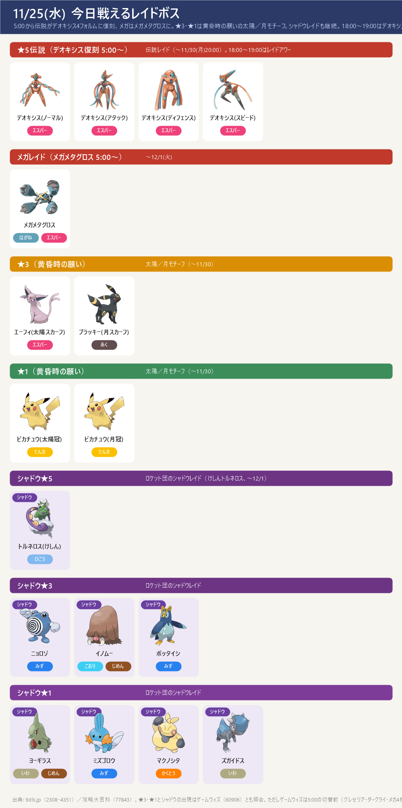
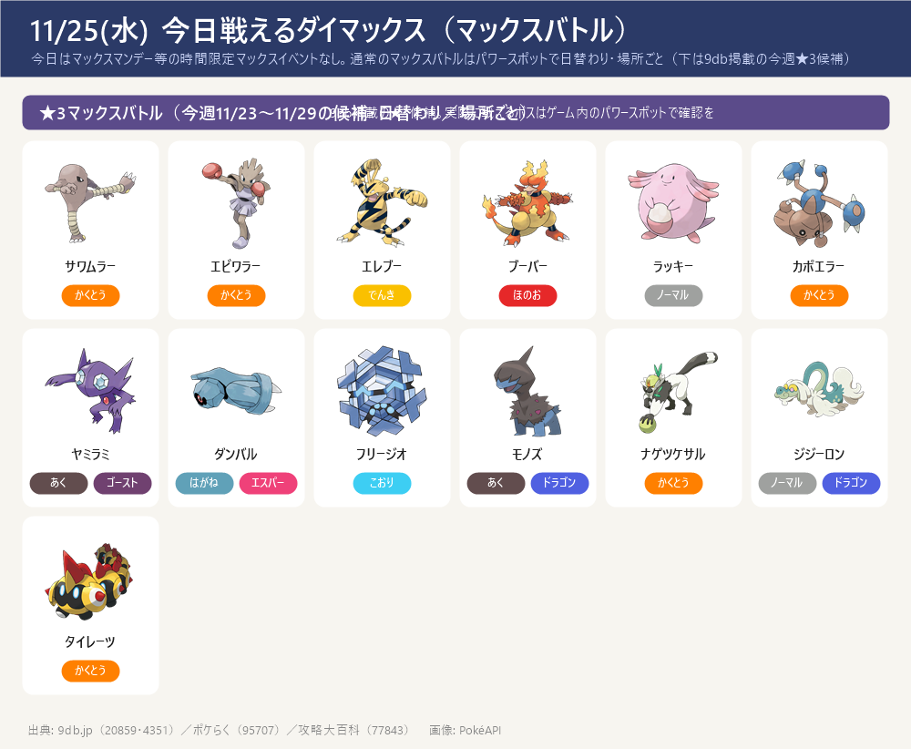
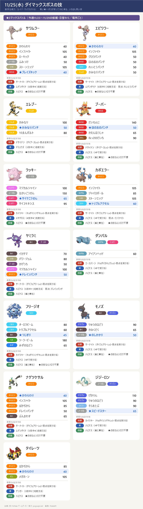
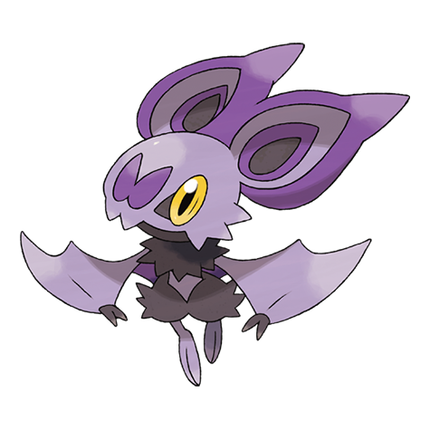

今日のポイント
- 今日5:00から伝説レイドが入れ替わり、
 デオキシス（4フォルム）が復刻。
デオキシス（4フォルム）が復刻。 デオキシス(ノーマル)・(アタック)・(ディフェンス)・(スピード)の4種が★5に（〜11/30(月)20:00）。メガレイドは
デオキシス(ノーマル)・(アタック)・(ディフェンス)・(スピード)の4種が★5に（〜11/30(月)20:00）。メガレイドは メガメタグロスが登場（〜12/1(火)）
メガメタグロスが登場（〜12/1(火)） - 今夜18:00〜19:00はレイドアワー。デオキシス（4フォルム）が多くのジムに出現。デオキシス厳選のチャンスです
- ★3は
 エーフィ(太陽スカーフ)・
エーフィ(太陽スカーフ)・ ブラッキー(月スカーフ)、★1は
ブラッキー(月スカーフ)、★1は ピカチュウ(太陽冠)・ピカチュウ(月冠)（黄昏時の願いのレイド、〜11/30）。シャドウレイドも継続（★5 シャドウけしん
ピカチュウ(太陽冠)・ピカチュウ(月冠)（黄昏時の願いのレイド、〜11/30）。シャドウレイドも継続（★5 シャドウけしん トルネロス、★3・★1）
トルネロス、★3・★1）
今日戦えるレイドボス
5:00から伝説がデオキシス4フォルムに復刻、メガはメガメタグロスに。★3・★1は黄昏時の願いの太陽／月モチーフ。シャドウレイドも継続。18:00〜19:00はデオキシスのレイドアワー
- 5:00に伝説・メガが入れ替わり、デオキシス4フォルムとメガメタグロスに。終了はデオキシス11/30(月)20:00、メガメタグロス12/1(火)。終了時刻はゲーム内で確認を
- 18:00〜19:00はレイドアワーでデオキシス（4フォルム）が多くのジムに出現。どのフォルムが出るかは場所・ジムで異なります
- ゲームウィズ（60906）は取得時点でまだ切替前（
 クレセリア・
クレセリア・ ダークライ・メガ4種）を表示していました。デオキシス・メガメタグロスは9db(2308・4351)・攻略大百科(77843)で一致したため採用
ダークライ・メガ4種）を表示していました。デオキシス・メガメタグロスは9db(2308・4351)・攻略大百科(77843)で一致したため採用

今日戦えるダイマックス（マックスバトル）
今日はマックスマンデー等の時間限定マックスイベントなし。通常のマックスバトルはパワースポットで日替わり・場所ごと（下は9db掲載の今週★3候補）
- 今日はマックスマンデーなどの時間限定マックスイベントはありません（次は11/30(月) マックスマンデー：
 フリージオ 6:00〜21:00）
フリージオ 6:00〜21:00） - 通常のマックスバトル（★1〜★3）はパワースポットで日替わり・場所ごとに登場します。戦えるボスはゲーム内のパワースポットで確認してください
- 9db（20859）が挙げる今週（11/23〜11/29）のパワースポット候補：★1はヒトカゲ・ゼニガメ・ピカチュウなどの基本ポケモン多数、★2は
 ニャスパー・ワンリキー・イーブイ・ツボツボ・ニューラ・ホエルコ・ヒンバス・ダルマッカ、★3は下のカード。なおポケらく（95707）は今週を「ダイマックスニャスパー（★1）」中心と表示しており食い違います→ゲーム内で確認を
ニャスパー・ワンリキー・イーブイ・ツボツボ・ニューラ・ホエルコ・ヒンバス・ダルマッカ、★3は下のカード。なおポケらく（95707）は今週を「ダイマックスニャスパー（★1）」中心と表示しており食い違います→ゲーム内で確認を - 【各ボスのスペシャルアタック候補】（下のカード。数字はレイド・マックスバトルでの威力。★＝ボスが使ってくると楽な、いちばん弱い技（ボスと同じタイプの技は1.2倍で計算。こちらのポケモンとの相性は見ていない）。戦闘中に技名が出たら受け役を合わせる）


サカキ対策（シャドウゼクロム）：攻略ページへ（別ページ）
締め切り・やること：まとめページへ（別ページ）
この先の予定（タップで開閉）
- 11/25(水) 5:00〜 伝説レイドにデオキシス（4フォルム）復刻（〜11/30 20:00）・メガレイドにメガメタグロス（〜12/1）・18:00〜19:00 レイドアワー（デオキシス）
- 11/26(木) 18:00〜19:00 スポットライトアワー：

オンバット - 11/28(土) 14:00〜17:00 スーパーメガレイドデイ：メガピクシー
- 11/30(月) 6:00〜21:00 マックスマンデー：フリージオ／黄昏時の願い 20:00 終了／デオキシス復刻 20:00 終了
- 12/1(火) シーズン25開始・GOパス終了／メガメタグロス 20:30 終了／シャドウ化身トルネロス終了
サイトで違っていた点（タップで開閉）
- 伝説・メガの切替：9db（2308）の11/25日程は5:00から デオキシス4フォルム＋メガメタグロス。ゲームウィズ（60906）は取得時点でまだ切替前（クレセリア・ダークライ・メガ4種）を表示。デオキシス・メガメタグロスは 9db(2308)・9db(4351)・攻略大百科(77843) で一致したため採用。切替・終了時刻はゲーム内で確認を
- デオキシスのレイドアワー（18:00〜19:00）は 9db(4351)・攻略大百科(77843) で一致
- ★3エーフィ(太陽スカーフ)/ブラッキー(月スカーフ)、★1ピカチュウ(太陽冠/月冠)、シャドウ各種は 9db(2308)×ゲームウィズ(60906) で一致
- マックスバトルの固定ボス：ポケらく（95707）は今週を「ダイマックスニャスパー（★1）」と表示し固定ボス扱い、9db（20859）は★1〜★3の日替わり候補を表示。食い違うため9db掲載の今週★3候補を参考に載せ、ゲーム内確認を促す
- 今後の予定：11/28(土) スーパーメガレイドデイ メガピクシー は 9db(4351)×攻略大百科(77843) で一致。11/30(月) マックスマンデーは9dbが「フリージオ」、攻略大百科は「未発表」と表示（9dbに合わせてフリージオと記載）
- ダイマックスボスの技候補はゲームデータ(PvPoke)から（おんがえし・やつあたりは除外）、威力は pogoapi.net
出典: 9db.jp/pokemongo（開催イベント一覧4351・レイド日程2308・マックスバトル日程20859）／pokemongo.gamewith.jp（60906）／pokemongo-raku.com（95707）／pokemon.gamepedia.jp/go（攻略大百科77843）／pvpoke.com ゲームデータ（技候補）／pogoapi.net（威力）
画像: PokéAPI ／ 2サイト以上で一致した情報だけを載せています